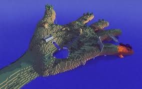
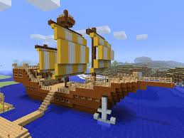
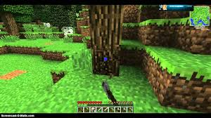
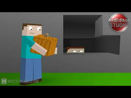
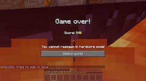
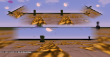
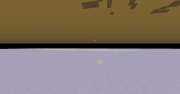

|
М А Й Н К Р А Ф Т |
|||||||
|
-------------------
ГОЛОВНА ІНФА ------------------- |
------------------------------------------------------------------------------------------------------------------------------------------------------- Режими гри ------------------------------------------------------------------------------------------------------------------------------------------------------- На даний момент в грі присутні п'ять режимів: Виживання , Творчість , Пригода , Хардкор і Спостереження . На сервері і в світах одиночної гри з включеною опцією « Чит- коди » можна перемикати режими командою / gamemode 0/1/2/3 . Tворчість  Творчий режим ( англ. Creative ) - один з декількох ігрових режимів в Minecraft . Це єдиний доступний ігровий режим у версії Classic. Також він доступний в Beta після Adventure Update . Гравці отримують нескінченну кількість кожного виду блоків для будівництва без оглядки на здоров'я або пошкодження, а з Beta 1.8 можна літати , двічі натиснувши на клавішу стрибка. Також будь-які блоки знищуються з одного удару , причому не важливо , що в даний момент у вас в руках (правда , з версії 1.6 не можна ламати блоки мечем) . Завдяки цьому гравці можуть створювати величезні будови : замки , дороги , фонтани - але будівництвом можливості не обмежені , існує і особливий вид мистецтва - піксель -арт. Крім будівництва та піксел -арту гравці також можуть , використовуючи вбудовані функції , придумувати свої особливі розваги. Найпопулярнішим з них став своєрідний вид спорту - спліф . Одиночний світ у творчому режимі може бути створений , якщо включені чіти . Також можна перейти в режим Творчості з Виживання або Пригоди , використовуючи команду / gamemode . У мультіплеере режим гри може бути змінений індивідуально для кожного гравця за допомогою команди для операторів / gamemode < гравець > . Це означає , що окремі гравці можуть грати в творчому режимі (за вибором оператора) , якщо світ створений у виживанні , або навпаки. Ігровий режим може бути змінений шляхом введення / gamemode creative , / gamemode c або / gamemode 1 для творчого режиму , / gamemode survival , / gamemode s або / gamemode 0 для Виживання , / gamemode adventure , / gamemode a або / gamemode 2 для режиму Пригоди . У творчому режимі звичайного екрана інвентарю замінюється на екран вибору елементів , який представляє з себе інтерфейс з закладками , в якому містяться практично всі блоки і предмети . Існує також функція пошуку . Одна вкладка схожа на інвентар в режимі Виживання , так як там присутні слоти для броні ( але відсутня сітка крафта ) . Інші вкладки містять продукти харчування , будівельні блоки , декоративні блоки та ін Деякі предмети поводяться інакше , ніж в режимі Виживання , наприклад , пустиеведра ніколи не заповнюються водою або лавою , а заповнені відра ніколи не спустошуються , скільки б разів вони не використовувалися. Покинуті предмети можуть бути підібрані гравцем , але якщо осередки швидкого вибору вже забиті , то предмет перейде в інвентар Виживання . Якщо клітинки швидкого вибору і сам інвентар заповнені , предмети раніше можуть бути підібрані (на відміну від режиму Виживання ) , але сам предмет буде знищений і не з'явиться ні в одному з слотів інвентаря. Режим польоту включений за умовчанням; щоб злетіти , досить двічі натиснути стрибок. Використовуйте клавішу стрибка , щоб піднятися і клавішу присідання , щоб опуститися. Для переміщення за допомогою клавіш пересування. Гравець може відключити режим польоту за допомогою подвійного натискання стрибка знову , при цьому гравець впаде на землю. Режим польоту не вимикається , якщо гравець торкнеться землі . Щоб потрапити в вагонетку або ліжко , не обов'язково відключати політ . Якщо гравець летить дуже близько до верхньої частини блоку , не торкаючись до неї , то будуть чутні звуки ходьби. Швидкість польоту набагато швидше , ніж швидкість звичайного бігу .  Щоб взяти блок в інвентар , клікніть середньої кнопки миші по блоку . На відміну від режиму Виживання , обраний блок з'явиться в одній з комірок швидкого вибору , навіть якщо такий блок вже присутня в інвентарі гравця. У SMP , будь-які предмети не з творчого інвентарю та зачарування предмети будуть переміщені в інвентар. Творчий режим також дозволяє дублювати предмети за допомогою рамок. При приміщенні предмета в рамку , сам предмет не зникне з вашої руки. Моби будуть як і раніше Спаун так само, як і у виживанні (у тому числі і з спаунера ) , але ворожі моби є нейтральними і не намагатимуться атакувати гравця. Непорушні блоки ( корінна порода або рамки порталу) можуть бути знищені у творчому режимі. Якщо гравець опуститься занадто низько Порожнечу , то він помре , однак гравець може літати над Порожнечею , за умови , якщо він не опускатиметься нижче рівня y -64. Це єдиний спосіб померти в творчому режимі , не рахуючи команди / kill . Блоки , які можуть бути знищені іншими способами (падіння піску і гравію чи яйце дракона ) , можуть бути підібрані гравцем. Якщо гравець тримає меч в руці , то він не зможе руйнувати блоки. Якщо гравець буде летіти високо - високо над хмарами , то буде видно два сонця , хоча насправді це і сонце і місяць світять одночасно. Деякі предмети і блоки доступні тільки в творчому режимі , наприклад , губки або яйця закликання . У Xbox 360 виданні створення нових світів з творчим режимом або увійти у вже існуючі світи з творчим режимом , призведе до того , що будуть відключені поновлення досягнень і списку лідерів , але немає іншого впливу на геймплей. Іншими словами , досягнення і список лідерів працюють тільки в світах з режимом " Виживання" . Інвентар в Xbox 360 виданні точно такий же , як і в ПК- версії. Виживання  Виживання (від англ. Survival) - це ігровий режим в Minecraft, в якому гравці повинні збирати ресурси, будувати споруди, вбивати мобів, поповнювати голод і досліджувати навколишній світ, щоб вижити. У режимі виживання гравці мають інвентар, в якому можна зберігати різні предмети. Можна створювати інструменти, об'єднуючи певні предмети в рецептах. Даний процес відомий як крафт. Більшість предметів потрібно створювати вверстаке. Гравці також можуть створювати зілля шляхом зельеваренія. Мета гри Незважаючи на те що в грі відсутня певна мета, гравець може сам вибрати її. Даний режим додає величезну кількість різних ресурсів, які потрібно добути, можливість атаки і захисту та багато іншого. Гравець може досягти «правильної кінцівки» в режимі виживання, перемігши дракона Краї, але гра на цьому не припиняється; при вбивстві головного боса гри ви отримуєте нове досягнення, величезна кількість досвіду і можливість використовувати вимірювання Край у своїх цілях. Крім того, є додатковий бос, Іссушітель, який стає доступний в середині-кінці гри.
Пригодa  Режим Пригоди (англ. Adventure ) , раніше відомий як Dungeons and Levers - це ігровий режим , призначений для творців карт на проходження , що обмежує ігровий процес , щоб уникнути псування карт на проходження або гріферства на серверах. Більшість блоків не можуть бути знищені без відповідних інструментів. Однак , гравці як і раніше можуть взаємодіяти з мобами і предметами крафта . Незважаючи на те що в Minecraft можливо пограти в « звичайне» виживання , в режимі пригоди це досить важко реалізувати. Дуже багато часу витрачається на збір продуктів харчування для поповнення голоду. Це пов'язано з тим , що гравці не мають можливості негайно збирати блоки і не встигають побудувати укриття , щоб перечекати першу ніч . З цієї причини , дуже важливо для гравців якнайшвидше знайти села NPC або які-небудь інші структури , які захищають від нападів ворожих мобів . Новачкам рекомендується включити чіти або бонусний скриню до створення світу .
Хардкор  Хардкор (англ. Hardcore ) - режим гри , різновид режиму виживання , в якій після смерті гравця світ видаляється.
Спостереження  Спостереження - це режим гри , в якому гравець має можливість спостерігати за грою, не взаємодіючи з миром , що в першу чергу дозволяє пролітати всі блоки наскрізь. Включається командами / gamemode spectator , / gamemode 3 та / gamemode sp . У режимі спостереження Ви можете безперешкодно проходити крізь блоки і сутностей , але не можете взаємодіяти з ними ( знищувати блоки , наносити шкоди мобам і т. д.). Гравець постійно знаходиться в режимі польоту , пересування пішки неможливо. Біг , ефекти стрімкості і повільності також впливають на швидкість польоту. Ви можете вільно проходити крізь мобів , блоки та інших гравців. Спостерігач не впливає на Спаун мобів і не може бути ними помічений .  Ви не можете наносити шкоди мобам і водночас не отримуєте утрату. Лава , утоплення , вогонь і удушення також не впливають на гравця. Однак , Ви можете отримати утрату при падінні в Порожнечу і командою / kill . Якщо Ви відкриваєте вікно інвентарю , то Ви не можете модифікувати його . Аналогічним чином , перегляд графічних інтерфейсів - відсутня можливість взаємодіяти з ним. Також не можна збирати викинуті предмети і використовувати предмети з інвентарю . Якщо Ви кликнете ЛФМ по суті , то Ви захопіть її камеру. Гравець не може управляти сутністю і камера гравця буде рухатися в залежності від того , куди повернеться моб . Присідання ( ⇧ Лівий Shift за замовчуванням ) повертає гравця в режим вільного польоту. Зір деяких мобів використовує спеціальні шейдери . Спостерігачі можуть бачити інших спостерігачів , невидимих мобів , а також самих себе , якщо використовувати F5. Якщо дивитися на гравця , змінивши перспективу F5 під час польоту , видно , що він позбавлений тіла , а голова напівпрозора . При використанні команди / scoreboard teams option
|
------------------------
ЗМІСТ ------------------------ |
|||||